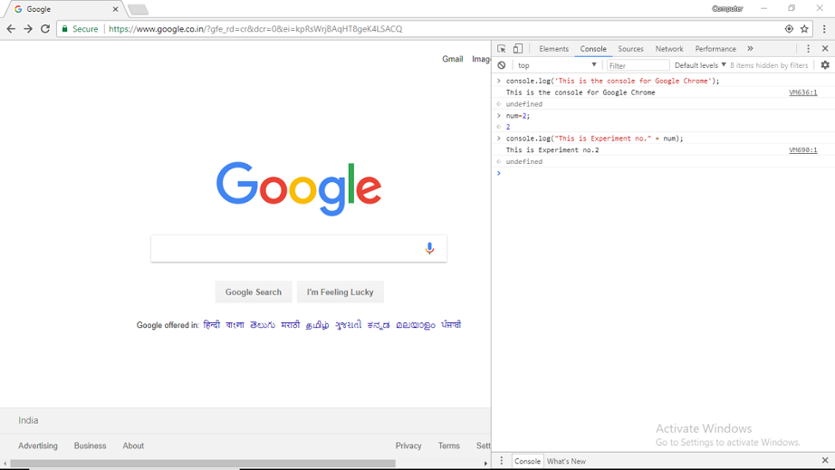
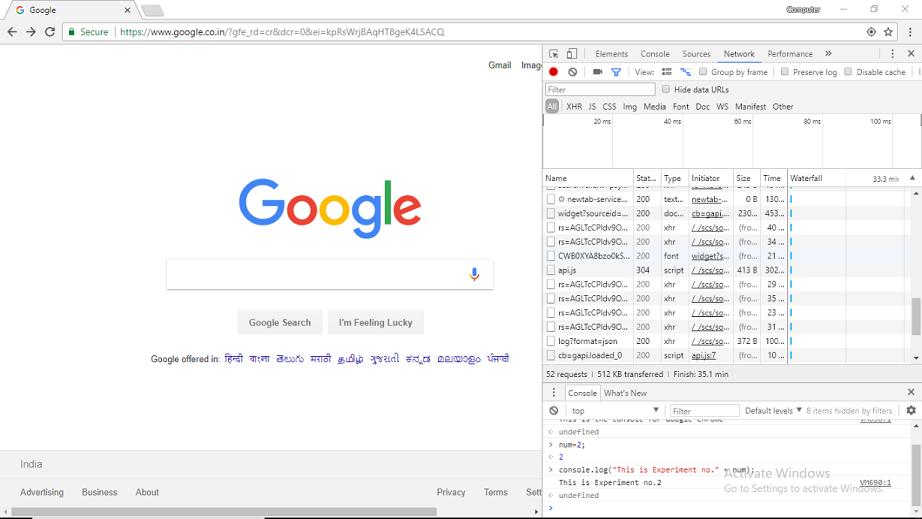

Experiment-2
Development Tools (Google Chrome)
-
Elements
The first tab in the Developer Tools is Elements. This is your window into the structure of the web page, presented as your browser sees it.

Fig 1.1 Element Tool
(i) DOM Browsing
The Elements tab is better than "View Source" for a Page. Inside the elements tab, the page's DOM will be nicely formatted,easily showing the HTML elements, their ancestory and their descendants. It's hard to read the "View Source" because it is optimized and minified. The format is good for clients and servers but difficult for developers! Instead, when we want to read the source of a page, using the Elements Tab gives us a view to a pretty-printed, syntax highlighted element hierarchy.
(ii) Styles Browsing
The cascading nature of CSS makes the Styles browser in the Elements tab very useful. Sometimes, styles collapse onto themselves and unintended visuals appear. Knowing which styling rule the browser is applying to the element helps you debug such an issue. Clicking on any element in the Elements tab will display all the styles attached to that element.

Fig 1.2 Styling
(iii) Box Model
We can see the box model as it is applied to the selected element by selecting the Metrics menu:

Fig 1.3.1 Box Model

Fig 1.3.2 Box Model Tool
-
Console
Fig 2.1 DevTools Console
We can access the Console as a full-screen , dedicated panel, or as a drawer that opens next to any other panel
Open as Panel
To open the dedicated Console panel, either:- Press Ctrl+Shift+J (Windows / Linux) or Cmd+Opt+J (Mac).
- If DevTools is already open, press the Console button.
Open as drawer
To open the Console as a drawer next to any other panel, either:
- Press Esc while DevTools is in focus.
- Press the Customize and control DevTools button and then press Show console.
-
Network
Fig 3.1 Network Tool
The Requests Table displays the following columns by default:
- Name. The name of the resource.
- Status. The HTTP status code.
- Type. The MIME type of the requested resource.
- Initiator. The object or process that initiated the request.
- Parser. Chrome's HTML parser initiated the request.
- Redirect. An HTTP redirect initiated the request.
- Script. A script initiated the request.
- Other. Some other process or action initiated the request, such as the user navigating to a page via a link, or by entering a URL in the address bar.
- Size. The combined size of the response headers (usually a few hundred bytes) plus the response body, as delivered by the server.
- Time. The total duration, from the start of the request to the receipt of the final byte in the response.
- Timeline. The Timeline column displays a visual waterfall of all network requests. Clicking the header of this column reveals a menu of additional sorting fields.
-
Performance
We can improve the runtime performance of our page by recording amd exploring the various events that happen during the life cycle of a site.
Runtime Performance is how our page performs wehn it is running , as opposed to loading.Chrome DevTools Performance Panel helps us to analyze runtime performance of a site.
Record Runtime Performance:
- In DevTools ,click Record.DevTools captures performance metrics as the page runs.
- Wait a few seconds.
- Click Stop.DevTools stops recording, processes the data, then displays the results on the Performance panel.
- Analyze the results as per your requirements

Fig 4.1 Performance Tool